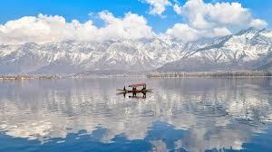
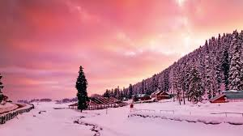
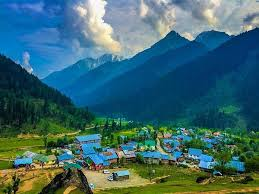
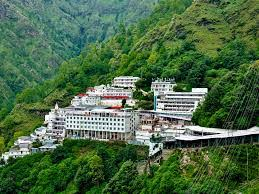
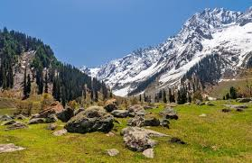

Srinagar

known as 'Paradise on Earth', famous for the picturesque Dal Lake and its floating houseboats, Mughal Gardens (Shalimar Bagh), and traditional Kashmiri handicrafts.
Gulmarg

A popular hill station and a premier skiing destination, known as the 'Meadow of Flowers'. It boasts the world's second-highest operating cable car, the Gulmarg Gondola.
Pahalgam

A tranquil town nestled on the banks of the Lidder River, famous for its lush green meadows, scenic valleys (like Betaab Valley), and serving as the base camp for the Amarnath Yatra.
Vaishno Devi Temple

A major Hindu pilgrimage destination, located in the Trikuta Mountains, where devotees undertake a trek to the sacred cave shrine of Mata Vaishno Devi.
Sonmarg

Known as the 'Meadow of Gold', this town offers breathtaking views of glaciers and snow-clad mountains, serving as a base for trekking routes to high-altitude lakes.